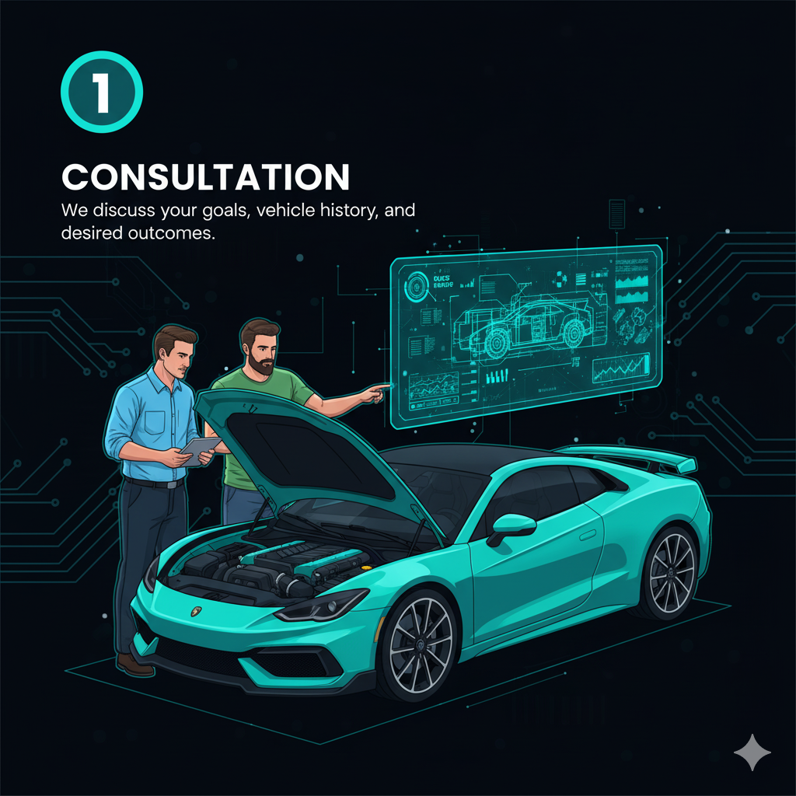
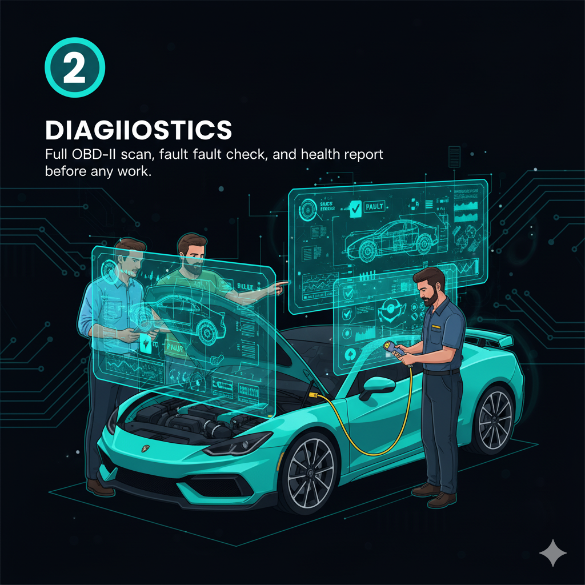

How It Works

1. Consultation
We discuss your goals, vehicle history, and desired outcomes to define the perfect tuning strategy.

2. Diagnostics
A full OBD-II scan, fault check, and comprehensive health report are performed before any work begins.
3. Custom Remap
The tailored ECU file is expertly written and uploaded securely to your vehicle on-site.
4. Dyno Verification
Before-and-after dyno runs are conducted to scientifically prove the real-world performance gains.

5. Handover & Support
You drive away with a full performance report and the peace of mind of our lifetime file backup.